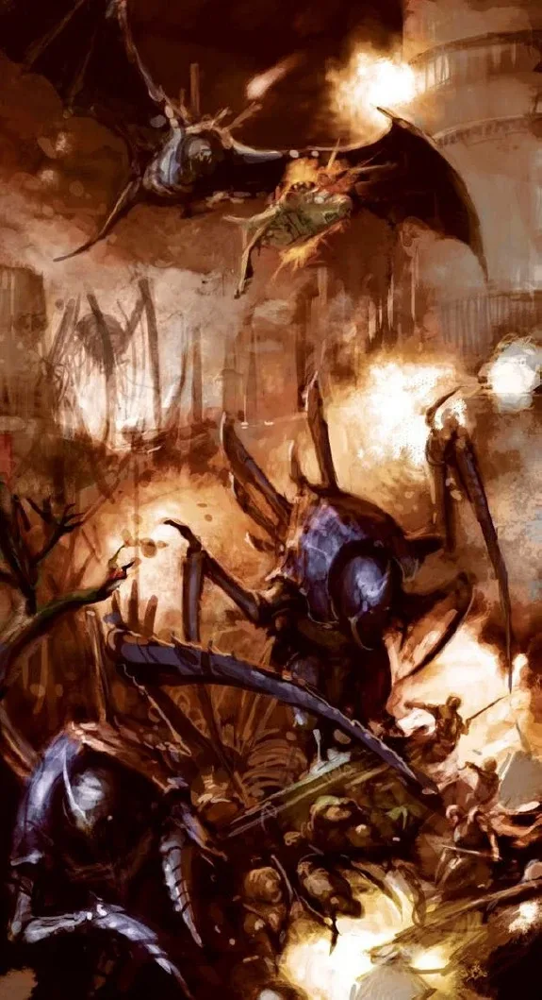
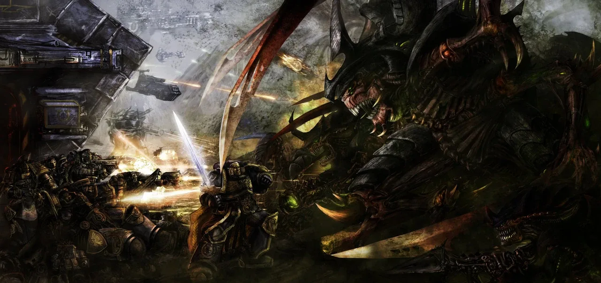
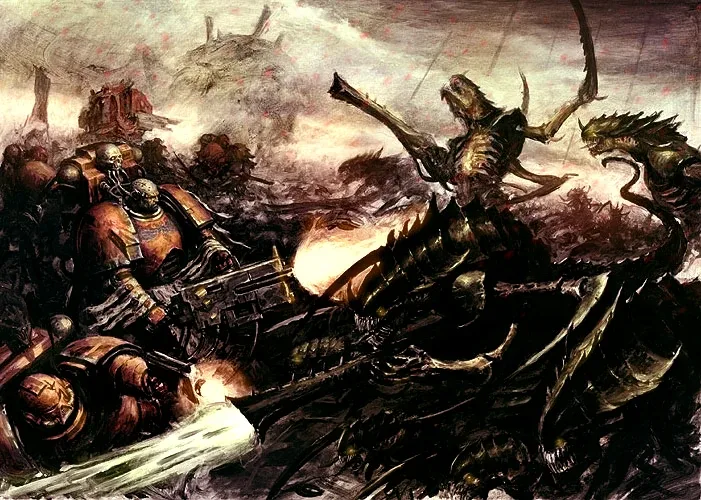
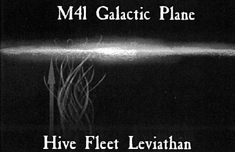

01ภาพรวม

ฝูงสิ่งมีชีวิตที่เดินทางข้ามอวกาศมากินทุกสิ่ง — ถูกควบคุมโดยจิตรวม Hive Mind
02ต้นกำเนิด
Tyranids มาจากนอกทางช้างเผือก ไม่มีใครรู้ว่าต้นกำเนิดคืออะไร กองยานแต่ละกอง (Hive Fleet) เป็นสิ่งมีชีวิตทั้งหมด ทุกตัวเชื่อมต่อกับจิตรวม Hive Mind จิตรวมนี้สร้าง 'Shadow in the Warp' ที่รบกวนการสื่อสารด้วยพลังจิตของเผ่าอื่น
03ยุค 30K — ในยุค Great Crusade และ Horus Heresy
ยุค 30K ยังไม่มีการบันทึกการบุกของ Tyranids — Hive Fleet Behemoth มาถึงกาแล็กซีครั้งแรกในปี 745.M41 นานหลังยุค Heresy
ดูภาพรวมยุค 30K ทั้งหมดที่ เนื้อเรื่องยุค 30K และความต่างของสองยุคที่ เปรียบเทียบ 30K vs 40K
04นิสัยและวัฒนธรรม
- ดูดซับพันธุกรรมของเหยื่อเพื่อวิวัฒนาการสร้างอาวุธใหม่
- ดาวที่ถูกกินจะเหลือเพียงหินเปลือย
- ส่ง Genestealer ล่วงหน้าไปแทรกซึมก่อน
05จุดที่น่าสนใจ
- Swarmlord: ร่างที่ Hive Mind ใช้บัญชาการโดยตรง ถูกฆ่าก็เกิดใหม่
- ทุกตัวไม่กลัวตาย
06วีรกรรมและเหตุการณ์สำคัญ
Hive Fleet Behemoth
Tyranids บุกกาแล็กซีครั้งแรก ถูกหยุดที่ Macragge
Hive Fleet Kraken
บุกหลายทิศทาง
Hive Fleet Leviathan
บุกจากใต้ระนาบกาแล็กซีและปิดล้อม Baal
Fourth Tyrannic War
Leviathan บุกครั้งใหม่
07ตัวละครสำคัญ

The Swarmlord
ผู้บัญชาการของ Hive Mindร่างอัจฉริยะทางทหาร
08ยุค 40K — สหัสวรรษที่ 41
ยุค 40K Tyranids บุกกาแล็กซีมาหลายระลอก
09เนื้อเรื่องล่าสุด (Era Indomitus / M42)
Hive Fleet Leviathan กลับมาใน Fourth Tyrannic War และจักรวรรดิต้องสู้รบอย่างหนักกับการรุกคืบครั้งนี้
หลังการเกิด Great Rift ปฏิทินของจักรวรรดิคลาดเคลื่อน เหตุการณ์ยุคปัจจุบันจึงมักระบุเพียง 'M42' ไม่มีปีที่แน่นอน
10แกลเลอรี



